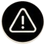
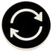

CAPÍTULO 01 / O QUE É E DE ONDE VEM
O QUE ESTAMOS CHAMANDO DE DROGA?
Nesta revista, o foco são substâncias psicoativas: produtos que
podem alterar processos mentais, como percepção, humor,
consciência ou pensamento. Álcool e nicotina também pertencem
a esse conjunto. Ser lícita ou ilícita é uma classificação jurídica;
não é uma escala automática de perigo.
PADRÕES DE USO
USO EXPERIMENTAL
Primeiro contato com
a substância, geralmente
por curiosidade ou
influência social.
USO RECENTE
Uso em um período
recente, ainda sem
sinais claros de
problemas.

USO PROBLEMÁTICO
Uso que já causa
prejuízos à saúde,
à escola, ao trabalho
ou às relações
sociais.

DEPENDÊNCIA
Uso contínuo, com
perda de controle,
tolerância e sintomas
de abstinência.
Esses quatro padrões não são etapas obrigatórias de uma mesma trajetória.
| GRUPO | EFEITOS POSSÍVEIS | RISCOS PRINCIPAIS |
|---|---|---|
| ÁLCOOL | Desinibição, atenção e coordenação alteradas | Intoxicação, acidentes, dependência e doenças |
| NICOTINA / TABACO / VAPES | Nicotina estimula; dispositivos variam | Dependência quando há nicotina; danos da exposição |
| CANNABIS | Percepção, atenção e memória alteradas | Ansiedade, prejuízos e transtorno por uso em parte dos usuários |
| COCAÍNA / CRACK | Euforia e estimulação cardiovascular | Dependência, arritmias e outras complicações graves |
| OPIOIDES | Analgesia e sedação | Dependência, depressão respiratória e overdose |
| ANFETAMINAS / MDMA | Estimulação e mudanças de energia/percepção | Hipertermia e complicações cardiovasculares |
| BENZODIAZEPÍNICOS | Sedação, sonolência e coordenação alterada | Dependência física/abstinência; misturas perigosas |
| INALANTES / SOLVENTES | Tontura, confusão e perda de coordenação | Arritmias, sufocamento e lesões neurológicas |
PARA LER OS GRÁFICOS
Experimentação: uso alguma vez na vida.
Uso recente: uso no período medido, como últimos 12 meses ou 30 dias.
Transtorno por uso: não pode ser diagnosticado apenas por ter experimentado.
Fonte: OMS; NIAAA; NIDA; CDC; FDA.
Quadro didático: efeitos e riscos variam
com dose, padrão e produto.